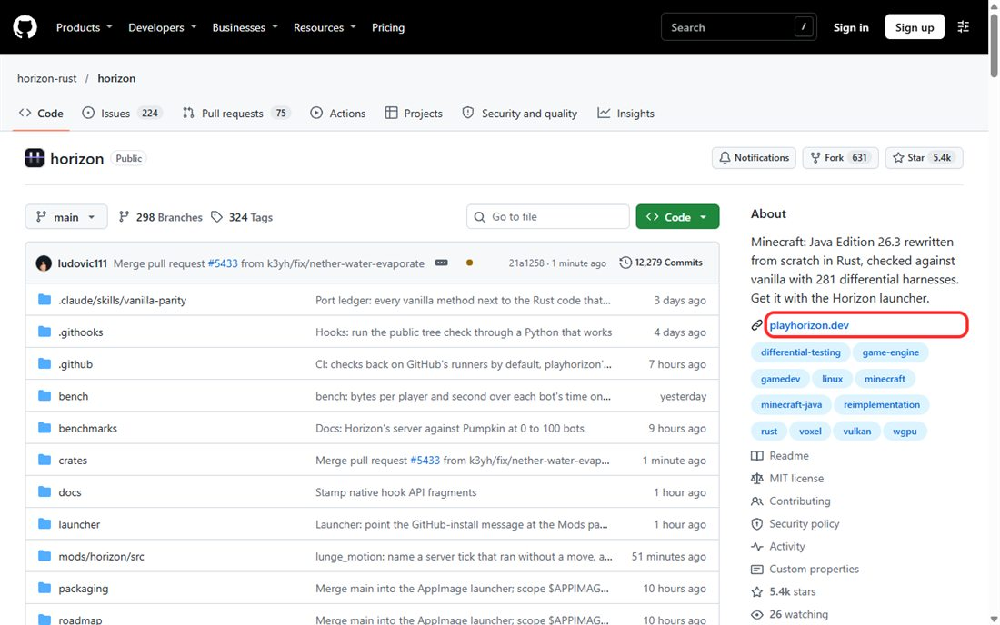
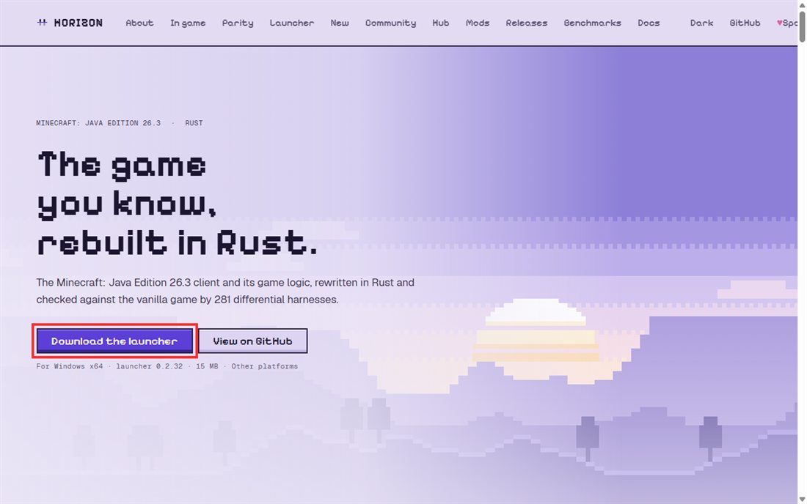
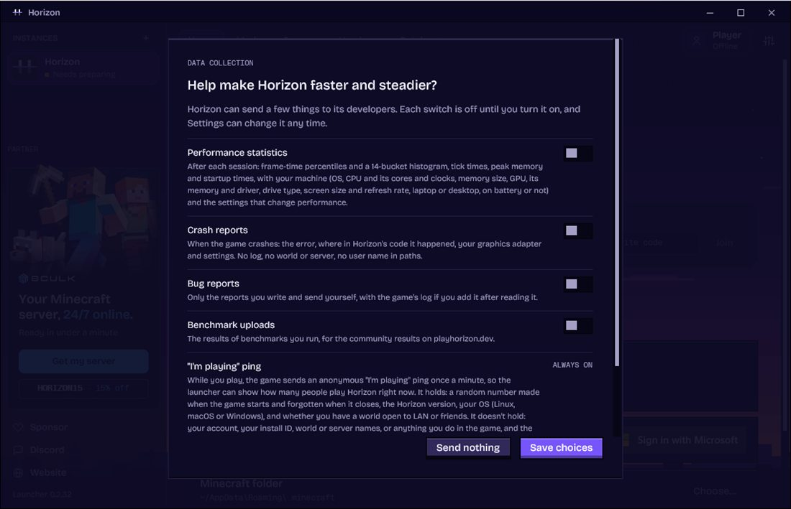
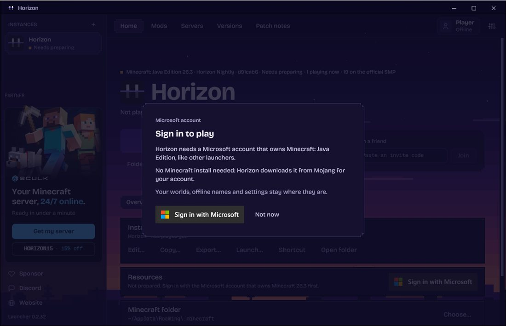
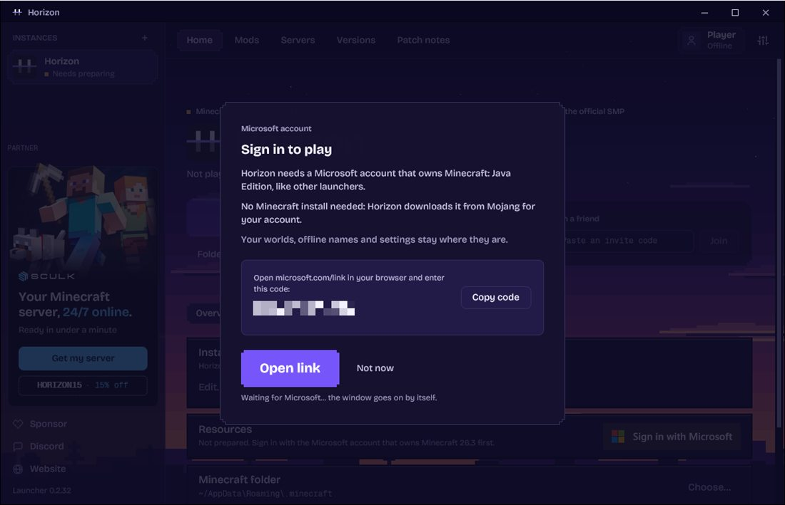
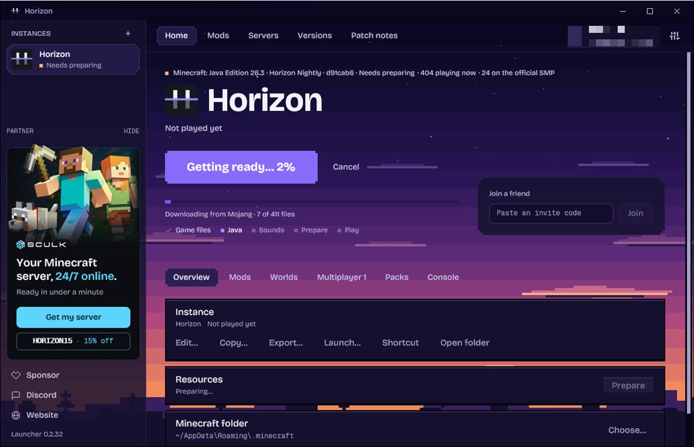
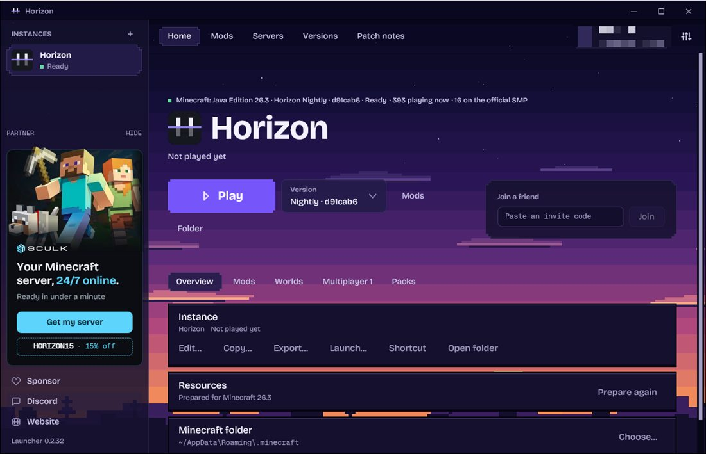
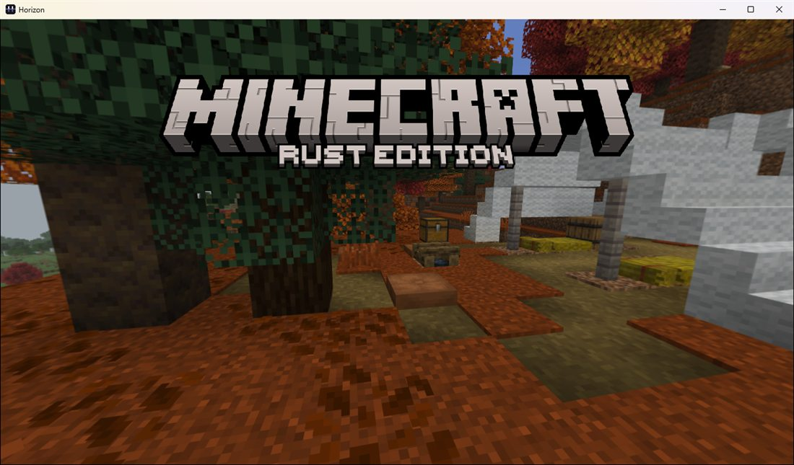
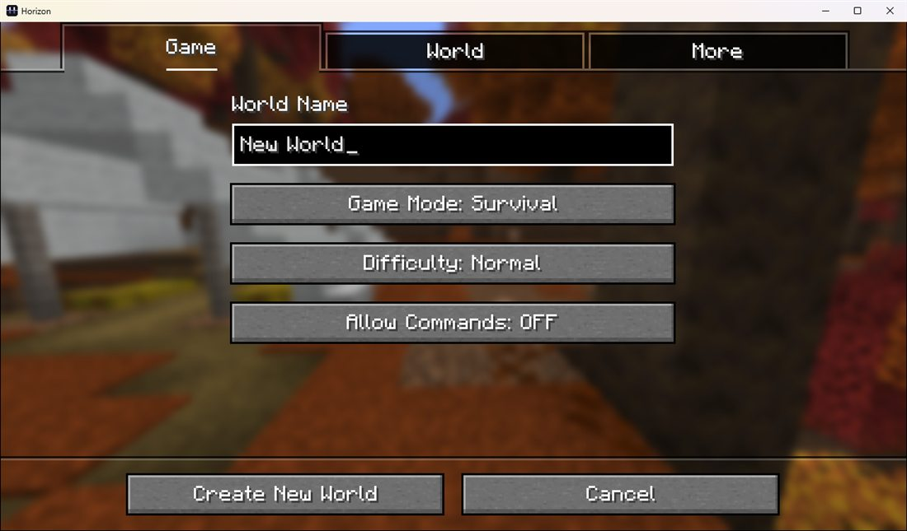
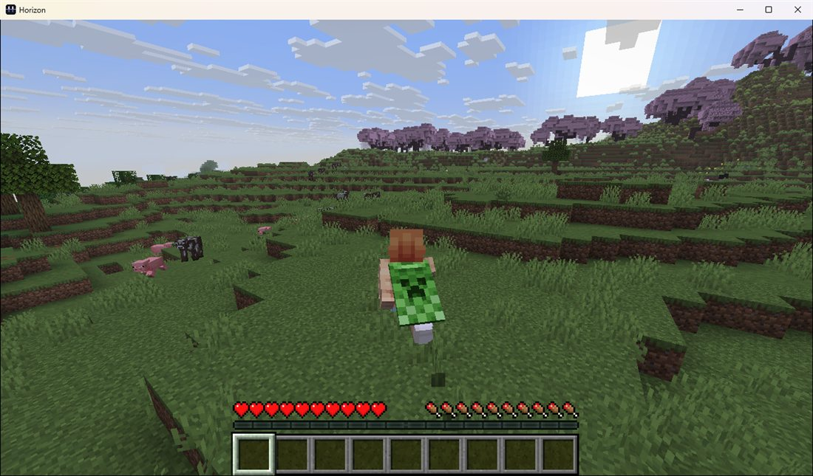

ต้องมีก่อนเริ่ม
- บัญชี Microsoft ที่ซื้อ Minecraft: Java Edition แล้ว (ไม่ต้องลงมายคราฟไว้ก่อน ลันเชอร์โหลดให้เอง)
- Windows 10 หรือ 11 แบบ 64-bit
- การ์ดจอที่รองรับ Vulkan หรือ DirectX 12 (การ์ดจอรุ่นไม่เก่ามากใช้ได้หมด)
- เน็ต และพื้นที่ว่างประมาณ 5 GB
เปิดหน้า GitHub ทางการ แล้วกดลิงก์เว็บของเกม
https://github.com/horizon-rust/horizonด้านขวาในกล่อง About กดลิงก์ playhorizon.dev หรือเข้าเว็บ playhorizon.dev ตรงๆ ก็ได้

กด Download the launcher
ได้ไฟล์ horizon-launcher-windows-x64.zip ขนาดประมาณ 15 MB

แตก zip แล้วเปิดลันเชอร์
- คลิกขวาที่ไฟล์ zip → แยกไฟล์ทั้งหมด (Extract All)
- ย้ายโฟลเดอร์ไปไว้ที่ที่หาง่าย เช่น D:\Game
- ดับเบิลคลิก horizon-launcher.exe
ไม่บังคับ: ไดรฟ์ C เต็ม อยากให้เก็บเกมไว้ไดรฟ์อื่น
ทำก่อนเปิดลันเชอร์ครั้งแรก เปิด PowerShell วางคำสั่งนี้ แก้ที่อยู่โฟลเดอร์ตามต้องการ แล้วกด Enter
[Environment]::SetEnvironmentVariable("HORIZON_LAUNCHER_HOME", "E:\Game\Horizon", "User")หน้าแรกถามเรื่องส่งข้อมูล กด Send nothing
ทุกตัวเลือกปิดไว้อยู่แล้ว กด Send nothing ได้เลย จะเปิดทีหลังในหน้าตั้งค่าก็ได้

มีอย่างเดียวที่ส่งเสมอคือ "I'm playing ping" ใช้นับว่ามีคนเล่นอยู่กี่คน ไม่มีชื่อบัญชี และไม่เก็บ IP
ล็อกอินด้วยบัญชี Microsoft
- กด Sign in with Microsoft
- ลันเชอร์จะขึ้นรหัส 8 ตัว กด Open link (หรือเข้า microsoft.com/link เอง) แล้วกรอกรหัส
- ล็อกอินในเว็บของ Microsoft ให้เสร็จ แล้วกลับมาที่ลันเชอร์ มันจะไปต่อเอง


กด Play แล้วรอครั้งแรก
ครั้งแรกปุ่มจะขึ้นว่า Getting ready… ลันเชอร์จะทำงานไล่ตามขั้นข้างล่างให้เอง รอหลายนาที ขึ้นกับความเร็วเน็ต ไม่ได้ค้าง
- Game files โหลดมายคราฟ 26.3 จากเซิร์ฟเวอร์ของ Mojang
- Java และ Sounds โหลดตัวช่วยกับเสียงเกม
- Prepare แปลงไฟล์ให้ Horizon ใช้ได้

เสร็จแล้วสถานะจะเป็น Ready และปุ่มเปลี่ยนเป็น Play

เกมเปิดแล้ว สร้างโลกใหม่
เข้า Singleplayer → Create New World ตั้งชื่อโลก แล้วกด Create New World


เล่นได้แล้ว
กด F3 ดู FPS กับข้อมูลเครื่อง ครั้งต่อไปแค่เปิด horizon-launcher.exe แล้วกด Play ไม่ต้องรอนานเหมือนครั้งแรก

ถามบ่อย
ล็อกอินแล้วเล่นไม่ได้
บัญชีนั้นยังไม่ได้ซื้อ Minecraft: Java Edition ต้องเป็นบัญชีที่ซื้อแล้วเท่านั้น
เกมอัปเดตเองไหม
อัปเดตเอง ลันเชอร์จะโหลดเวอร์ชันใหม่ให้ตอนเปิด โลกที่เล่นไว้ไม่หาย
ใส่มอด Fabric / Forge ได้ไหม
ไม่ได้ Horizon ไม่ได้รันโค้ด Java ของมายคราฟ มอดต้องเป็นแบบของ Horizon เอง หาได้ในแท็บ Mods ของลันเชอร์
แชร์โฟลเดอร์เกมให้เพื่อนได้ไหม
ไม่ได้ ไฟล์ข้างในเป็นของ Mojang ที่โหลดมาด้วยบัญชีของเรา เพื่อนต้องลงเองด้วยบัญชีของตัวเอง
ครั้งแรกเปิดช้า
ปกติ ครั้งแรกต้องโหลดและเตรียมไฟล์ ครั้งต่อไปจะเร็วขึ้นมาก